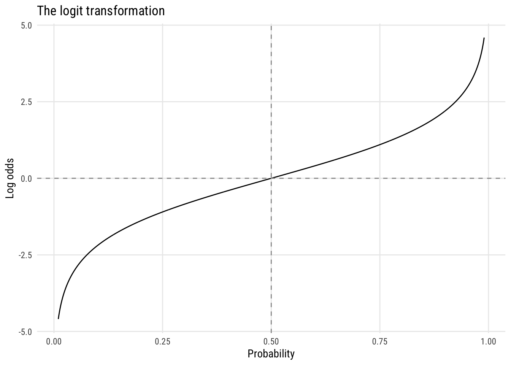
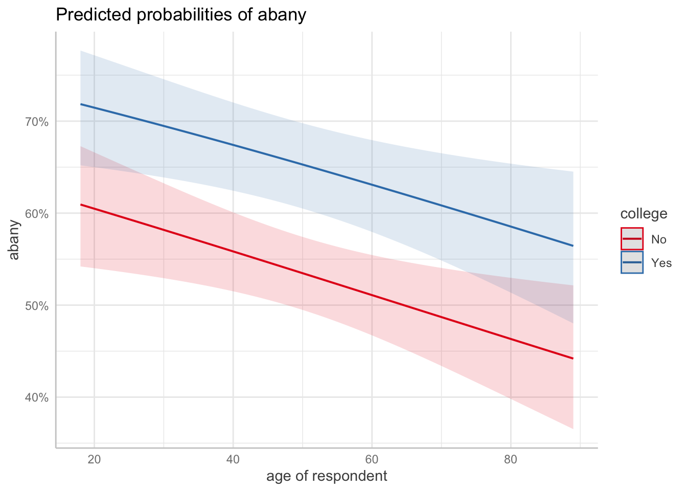
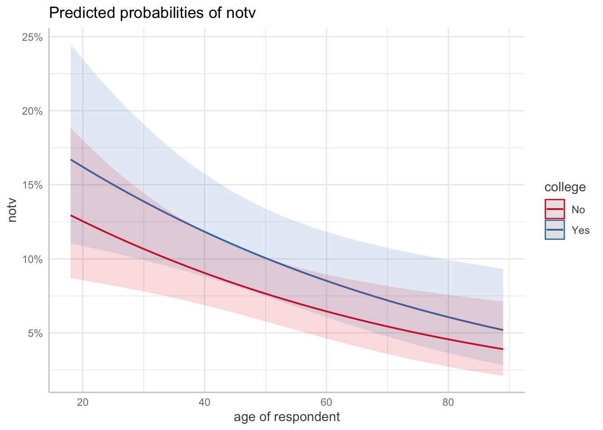

pacman::p_load(dplyr,
tidyr,
broom,
janitor,
marginaleffects,
ggeffects,
tinyplot,
ggplot2)Chapter 15
Set up
tinytheme("ipsum",
family = "Roboto Condensed",
palette.qualitative = "Tableau 10",
palette.sequential = "agSunset")# Match tinyplot ipsum style
theme_set(
theme_minimal(base_family = "Roboto Condensed") +
theme(panel.grid.minor = element_blank())
)
# Match Tableau 10 palette used by tinytheme (hex codes from ggthemes)
tableau10 <- c("#5778a4", "#e49444", "#d1615d", "#85b6b2", "#6a9f58",
"#e7ca60", "#a87c9f", "#f1a2a9", "#967662", "#b8b0ac")
options(
ggplot2.discrete.colour = \() scale_color_manual(values = tableau10),
ggplot2.discrete.fill = \() scale_fill_manual(values = tableau10)
)Measures of dependence in 2x2 tables
Before diving into logistic regression, it helps to think carefully about what we’re trying to model when we have two binary variables. The fundamental question is: are they associated? And if so, how do we measure the strength of that association?
We’ll work through an example: sociology admissions at Berkeley in 2009, broken down by citizenship status.
berk <- matrix(c(93, 4, 212, 33),
nrow = 2,
dimnames = list(admitted = c("no", "yes"),
citizenship = c("Other", "U.S.")))
addmargins(berk) citizenship
admitted Other U.S. Sum
no 93 212 305
yes 4 33 37
Sum 97 245 342Marginal and conditional probabilities
The marginal probability of admission is the overall rate, ignoring citizenship:
p_admit <- rowSums(berk)["yes"] / sum(berk)
p_admit yes
0.1081871 Similarly, \(P(\text{U.S.}) = 245/342 = .716\). These are “marginal” because they come from the margins of the table—they don’t condition on anything.
More interesting are conditional probabilities—the probability of admission given citizenship status:
p_admit_us <- berk["yes", "U.S."] / colSums(berk)["U.S."]
p_admit_other <- berk["yes", "Other"] / colSums(berk)["Other"]
c(US = p_admit_us, Other = p_admit_other) US.U.S. Other.Other
0.13469388 0.04123711 U.S. applicants are admitted at 13.5%; non-U.S. applicants at 4.1%. You’ll often see this written as \(\pi_{\text{admitted}|\text{U.S.}} = .135\) or \(\Pr(Y = 1 \mid X = 1) = .135\).
Independence and expected values
Two variables are independent if the conditional probabilities equal the marginal:
\[ \pi_{\text{admitted}|\text{U.S.}} = \pi_{\text{admitted}|\text{Other}} = \pi_{\text{admitted}} \]
We can think about this in terms of expected cell counts: if the two variables were unrelated, how many people would we expect in each cell?
\[ E_{ij} = \frac{(\text{row total}_i)(\text{col total}_j)}{n} \]
outer(rowSums(berk), colSums(berk)) / sum(berk) Other U.S.
no 86.50585 218.49415
yes 10.49415 26.50585The observed counts depart from these expected values, which tells us there’s some association. But how much? Four measures below.
Four measures of dependence
1. Difference in probabilities
\[ \pi_{\text{admitted}|\text{U.S.}} - \pi_{\text{admitted}|\text{Other}} = .135 - .041 = .094 \]
p_admit_us - p_admit_other U.S.
0.09345676 Simple and interpretable—a 9.4 percentage-point gap. The problem: the same difference means different things at different baselines. Going from .001 to .020 is a much bigger deal than going from .500 to .519, even though both are “.019 differences.”
2. Relative risk ratio (RRR)
\[ \text{RRR} = \frac{\pi_{\text{admitted}|\text{U.S.}}}{\pi_{\text{admitted}|\text{Other}}} = \frac{.135}{.041} = 3.3 \]
p_admit_us / p_admit_other U.S.
3.266327 More informative than a raw difference when probabilities are far from .5. But the RRR for rejection—keeping non-U.S. applicants in the numerator for consistency—is only:
(1 - p_admit_other) / (1 - p_admit_us) Other
1.108004 The same association (\(3.3\times\) vs \(1.1\times\)) looks very different depending on whether you frame it as success or failure. This asymmetry is a real problem.
3. Odds ratio
The odds of an event is \(\pi / (1 - \pi)\): probability of success divided by probability of failure. If you’ve ever heard “the odds are 5 to 1 against,” that’s what it means.
odds_us <- p_admit_us / (1 - p_admit_us)
odds_other <- p_admit_other / (1 - p_admit_other)
OR <- odds_us / odds_other
OR U.S.
3.619104 There’s a convenient shortcut for 2×2 tables using cell counts directly—the product of the two diagonals divided by the product of the other two:
(berk["no", "Other"] * berk["yes", "U.S."]) /
(berk["no", "U.S."] * berk["yes", "Other"])[1] 3.619104The odds ratio solves the success-failure asymmetry: the OR for rejection is also 3.6.1 But the OR is still asymmetric in one way: it ranges from 0 to \(\infty\), and the same relationship looks like 3.6 or 0.28 depending on which group you put in the numerator.
1 Odds of rejection for non-U.S.: \((.959/.041) = 23.4\). For U.S.: \((.865/.135) = 6.4\). Ratio: \(23.4/6.4 = 3.6\).
4. Log odds ratio
Taking the natural log solves the remaining problems:
log(OR) U.S.
1.286226 The log odds ratio:
- Is centered at 0 when there’s no association (instead of 1 for the OR)
- Is symmetric: flipping which group is the reference just changes the sign
- Ranges over all of \((-\infty, +\infty)\)
This is why logistic regression is logistic regression—it models the log odds of the outcome as a linear function of predictors. Every coefficient you estimate is, at heart, a log odds ratio. The key transformation is the logit:
\[ \text{logit}(\pi) = \log\left(\frac{\pi}{1 - \pi}\right) \]
Show code
tibble(p = seq(.01, .99, .001)) |>
mutate(log_odds = log(p / (1 - p))) |>
ggplot(aes(p, log_odds)) +
geom_line() +
geom_hline(yintercept = 0, linetype = "dashed", color = "gray60") +
geom_vline(xintercept = 0.5, linetype = "dashed", color = "gray60") +
labs(x = "Probability", y = "Log odds",
title = "The logit transformation")
The curve is symmetric around \(p = .5\), where \(\text{logit}(.5) = 0\), and it maps the bounded interval \((0, 1)\) to the full real line.
Summary of the four measures
| Measure | Formula | Value | Independence |
|---|---|---|---|
| Difference | \(\pi_1 - \pi_2\) | \(.094\) | \(0\) |
| RRR | \(\pi_1 / \pi_2\) | \(3.3\) | \(1\) |
| Odds ratio | \((\pi_1/\bar\pi_1) / (\pi_2/\bar\pi_2)\) | \(3.6\) | \(1\) |
| Log odds ratio | \(\log(\text{OR})\) | \(1.28\) | \(0\) |
Practice
Here’s a table from the GSS on whether spanking is acceptable, by sex:
spank <- matrix(c(461, 226, 489, 132),
nrow = 2,
dimnames = list(spank_ok = c("yes", "no"),
sex = c("Male", "Female")))
addmargins(spank) sex
spank_ok Male Female Sum
yes 461 489 950
no 226 132 358
Sum 687 621 1308Calculate all four measures of dependence. Which sex is more likely to say spanking is OK, and by how much?
Logistic regression
Let’s show how to do this using a model Let’s get the data, including a couple of binary variables:
`abany’: 1 = agrees that a woman should be able to have an abortion for any reason, 0 otherwise
notv: a variable built fromtvhoursthat = 1 if the person watches no TV, 0 otherwise
d <- readRDS("data/gss2024.rds") |>
haven::zap_labels() |>
select(sex, educ, age, abany, tvhours) |>
mutate(college = factor(if_else(educ >= 16, "Yes", "No")),
abany = case_match(abany, 2 ~ 0, 1 ~ 1),
notv = if_else(tvhours == 0, 1, 0),
female = case_match(sex, 2 ~ 0, 1 ~ 1)) |>
drop_na()Let’s look at the crosstab of college and abany.
d |> tabyl(college, abany) college 0 1
No 283 326
Yes 141 264We can convert this into conditional probabilities.
d |> summarize(m_abany = mean(abany), .by = college)# A tibble: 2 × 2
college m_abany
<fct> <dbl>
1 No 0.535
2 Yes 0.652We can model abany as a function of college using logistic regression.
m1 <- glm(abany ~ college,
data = d,
family = binomial(link = "logit"))
summary(m1)
Call:
glm(formula = abany ~ college, family = binomial(link = "logit"),
data = d)
Coefficients:
Estimate Std. Error z value Pr(>|z|)
(Intercept) 0.14145 0.08125 1.741 0.081684 .
collegeYes 0.48574 0.13222 3.674 0.000239 ***
---
Signif. codes: 0 '***' 0.001 '**' 0.01 '*' 0.05 '.' 0.1 ' ' 1
(Dispersion parameter for binomial family taken to be 1)
Null deviance: 1378.4 on 1013 degrees of freedom
Residual deviance: 1364.7 on 1012 degrees of freedom
AIC: 1368.7
Number of Fisher Scoring iterations: 4We can turn the college coefficient into an odds ratio by exponentiating it.
exp(coef(m1)[2])collegeYes
1.625375 d |>
summarize(m_abany = mean(abany), .by = college)# A tibble: 2 × 2
college m_abany
<fct> <dbl>
1 No 0.535
2 Yes 0.652# get difference (default)
avg_comparisons(m1, variables = "college")
Estimate Std. Error z Pr(>|z|) S 2.5 % 97.5 %
0.117 0.0311 3.74 <0.001 12.4 0.0555 0.178
Term: college
Type: response
Comparison: Yes - No# get risk ratio, not odds ratio!
avg_comparisons(m1, variables = "college", comparison = "ratio")
Estimate Std. Error z Pr(>|z|) S 2.5 % 97.5 %
1.22 0.0638 19.1 <0.001 267.4 1.09 1.34
Term: college
Type: response
Comparison: mean(Yes) / mean(No)m2 <- glm(abany ~ college + age, # is this reasonable?
data = d,
family = binomial())
summary(m2)
Call:
glm(formula = abany ~ college + age, family = binomial(), data = d)
Coefficients:
Estimate Std. Error z value Pr(>|z|)
(Intercept) 0.616631 0.197385 3.124 0.001784 **
collegeYes 0.492372 0.132693 3.711 0.000207 ***
age -0.009550 0.003604 -2.650 0.008060 **
---
Signif. codes: 0 '***' 0.001 '**' 0.01 '*' 0.05 '.' 0.1 ' ' 1
(Dispersion parameter for binomial family taken to be 1)
Null deviance: 1378.4 on 1013 degrees of freedom
Residual deviance: 1357.6 on 1011 degrees of freedom
AIC: 1363.6
Number of Fisher Scoring iterations: 4ggpredict(m2, terms = c("age [all]", "college")) |> plot()
avg_slopes(m2, variables = "college")
Estimate Std. Error z Pr(>|z|) S 2.5 % 97.5 %
0.117 0.031 3.78 <0.001 12.7 0.0565 0.178
Term: college
Type: response
Comparison: Yes - Nom3 <- glm(notv ~ college + age, # is this reasonable?
data = d,
family = binomial())
summary(m3)
Call:
glm(formula = notv ~ college + age, family = binomial(), data = d)
Coefficients:
Estimate Std. Error z value Pr(>|z|)
(Intercept) -1.576844 0.323784 -4.870 1.12e-06 ***
collegeYes 0.299481 0.222010 1.349 0.17735
age -0.018278 0.006461 -2.829 0.00467 **
---
Signif. codes: 0 '***' 0.001 '**' 0.01 '*' 0.05 '.' 0.1 ' ' 1
(Dispersion parameter for binomial family taken to be 1)
Null deviance: 612.34 on 1013 degrees of freedom
Residual deviance: 602.46 on 1011 degrees of freedom
AIC: 608.46
Number of Fisher Scoring iterations: 5ggpredict(m3, terms = c("age [all]", "college"), back_transform = FALSE) |> plot()
slopes(m3)
Term Contrast Estimate Std. Error z Pr(>|z|) S 2.5 % 97.5 %
age dY/dX -0.00203 0.000993 -2.05 0.0408 4.6 -0.00398 -8.51e-05
age dY/dX -0.00187 0.000869 -2.15 0.0313 5.0 -0.00357 -1.68e-04
age dY/dX -0.00105 0.000296 -3.56 <0.001 11.4 -0.00163 -4.73e-04
age dY/dX -0.00216 0.000951 -2.27 0.0234 5.4 -0.00402 -2.92e-04
age dY/dX -0.00148 0.000580 -2.55 0.0107 6.6 -0.00262 -3.44e-04
--- 2018 rows omitted. See ?print.marginaleffects ---
college Yes - No 0.02866 0.021761 1.32 0.1878 2.4 -0.01399 7.13e-02
college Yes - No 0.02331 0.017650 1.32 0.1865 2.4 -0.01128 5.79e-02
college Yes - No 0.01733 0.013283 1.30 0.1919 2.4 -0.00870 4.34e-02
college Yes - No 0.01818 0.013888 1.31 0.1904 2.4 -0.00904 4.54e-02
college Yes - No 0.01652 0.012707 1.30 0.1936 2.4 -0.00839 4.14e-02
Type: response